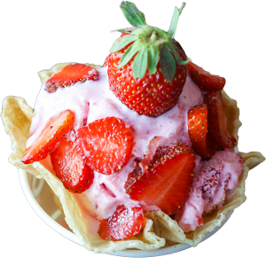
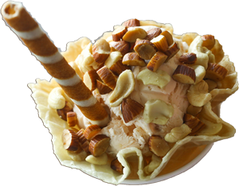

The one confusion that every ice cream lovers experience is which flavor to choose and 'The Scoop' have multiple flavors in one ice cream. These wishes and many more put together made us come up with the concept of cream stone, which is not just any ice cream parlor but is an ice cream boutique wherein exotic and creamy ice creams flavors are customized to create a long lasting taste buds satisfying experience for our customers. Our unique and propriety menu is one of its kind and caters all tastes and preferences of customers.
As much as our customers vouch for our quality and taste of ice creams, the making of an exotic dessert is equally interesting. The ice cream is hand mixed and beat on a frozen cold stone, adding, twisting the ingredients and ice creams in the right proportion to make the right dessert. Though ice creams are mostly preferred to be relished during a drive or walk, for all those who wish to sit back and peacefully satisfy their sweet tooth, we have our cream stone boutiques well designed that gives a warm and calm ambience.
